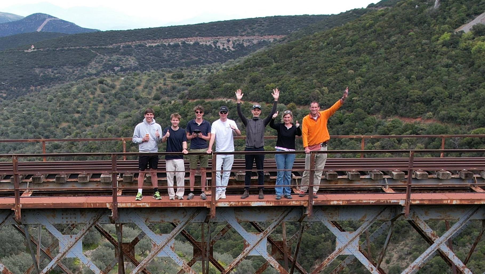
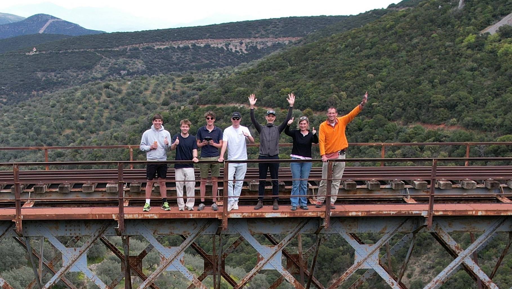

Welkom op onze projectwebsite!
Tijdens onze internationale ervaring in Griekenland hebben we verschillende locaties opgemeten en omgezet in interactieve 3D-modellen.

📍 Klik op een locatie op de kaart om deze in 3D te bekijken.
Camiel Clarysse, Stef Vander Linden, Siebe Naessens, Wout Bailleul
Welkom op onze projectwebsite!
Tijdens onze internationale ervaring in Griekenland hebben we verschillende locaties opgemeten en omgezet in interactieve 3D-modellen.
